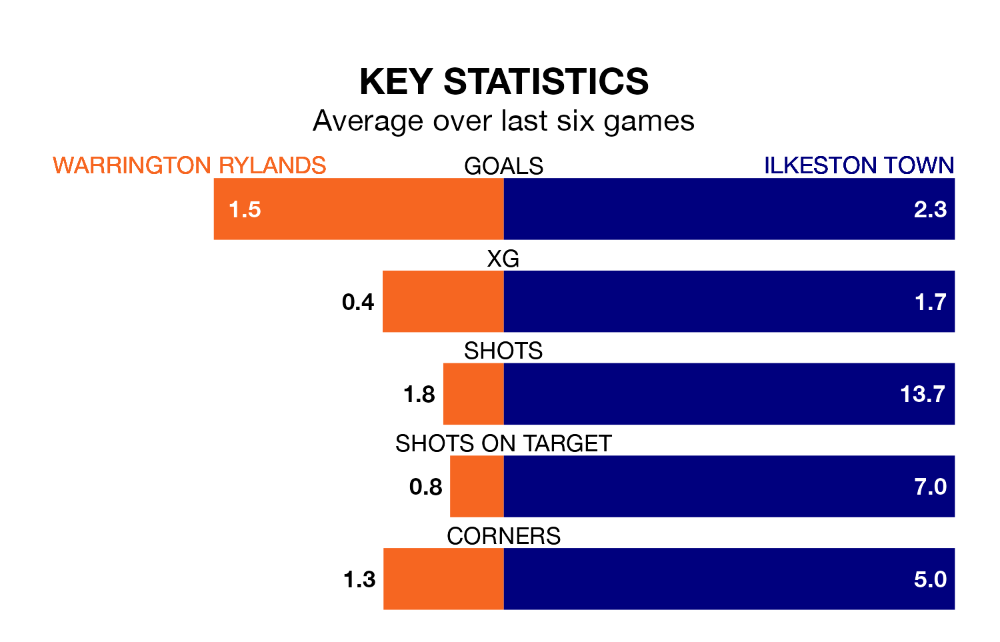

Ilkeston Town come to play Warrington Rylands on Saturday in excellent form, having collected 16 points from their last six games.
The visitors have won five and drawn one of their last six fixtures, while Warrington Rylands have three wins and a draw.
With 71 goals in 40 games so far this season, Ilkeston are scoring more than average in the league with 1.8 goals per game. And they are conceding fewer than average, letting in 61 goals at a rate of 1.5 per game.
Warrington Rylands, meanwhile, are average scorers, with 1.6 goals per game. They have conceded 1.1 goals per game.
The hosts are fifth in the table after 38 games, of which they have won 19 and drawn 12, earning 69 points.
Town are three places behind Warrington Rylands in eighth, with 19 wins and six draws putting them on 63 points.
Warrington Rylands's last match was on April 20, a 2-1 loss against Worksop Town.
Ilkeston beat Morpeth Town 3-2 last time out, also on April 20.
Updated: 07:59 (UTC), 26/04/24